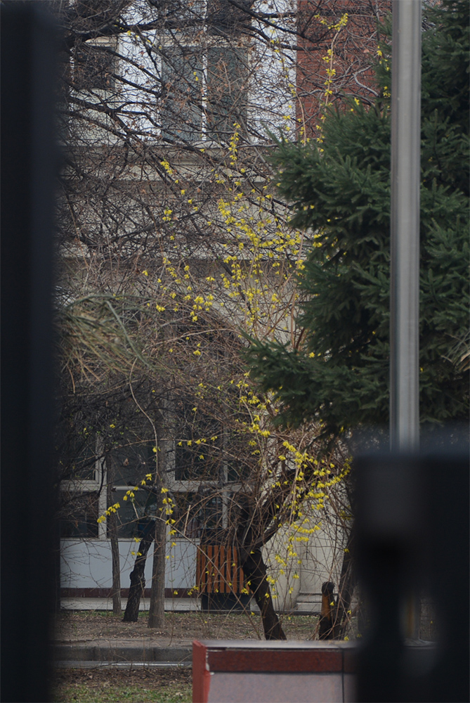

归去来兮
今年1月15日傍晚，孤单留校数日的我匆匆拍下几张腊梅的倩影，也没顾上仔细查看，就返回宿舍收拾行李。那时尚且想着回家见父母，能够好好休息一段日子，读书、折纸、随着性子折腾技术。
然而两个月以来变故巨大，猝不及防地把我困在了家里，只能戴着仓储几年的口罩偶尔上街，穿着冬天的衣服吹着一天天暖起来的风。缺口罩、没衣服、找不到可以出门的理由、不知道还能够去走走的地方，闷头自闭。
楼里封闭得太久太久，外面的春天已大张旗鼓地到来，我却充耳不闻。而且，明天五中的学弟学妹要开学了。回去看看吧。
我家在五中的北面，从最北的艺体楼往南，可见操场边绿丝绦已垂着，春草已半绿，不再是褐灰色。走到教学楼南面，两只小麻雀也飞过来——太久没见，大概是忘了怕人，由着我端起相机，一阵咔嚓。
蹲在柱子上的毛球：

飞到了龙爪槐上，回头看我：

一会儿还要追着我飞一段。
后街路口，每个红灯前都有停下来等待的汽车了，绿灯一亮，又走得半空。
不过校门对面的连翘几乎要开过去了：少有的几枝上，花还昂扬着，

大多数的，却已随着枝条的曲线垂成一串串风铃。

甚至一贯为仲春繁荣景象摇旗呐喊的海棠，都已经准备好开放。一树星星点点的桃红色，时间真快。

上大学不过一年多，这也才是第二个寒假。我只一个春天没见到家乡的花草，记忆竟已模糊起来，若只如初见了。
这样的景象强烈地提醒着我，春天不仅又来了，而且甚至不长了。闷在家里时耳目闭塞，最多看到了日出一天天早起来，感受到应该把棉睡衣换下去。偶尔看看云和天空，也并不能看到季风和寒潮的搏斗，更不能知道外面的变化。
一路来看到草长莺飞，心里回荡着陶渊明的《归去来兮辞》：“归去来兮，田园将芜胡不归？”熟悉的校园里，缺了传道受业、切磋琢磨，只留桃花依旧笑春风，也算是“田园将芜”吧。现在如果开学，又何必问前路于征夫，唯恨熹微之晨光。
转到高中时住所曾在处，现在南沙河快速路旁的小花园，见山桃远看正繁盛，近看却渐渐残缺了，小径满地落花，不禁有点失落。


但是比向着街道的一丛更向里的地方，就在满地落花旁，也有新枝上缀满粉色花蕾，正当初开时的另外一丛。

这就想起了五中里，勤勉楼前的丁香总是先开。待这些都要开败了，小花园里的丁香才准备绽放。四月芳菲本未尽，不止山寺有初花。只是大家多是在奔波在上学上课和放学回家的路上，在校园闲转的总是不多。
返回的路上经过校门的时候，还是忍不住把镜头顶在伸缩门前，变焦拉到最远，想看看逸夫堂前的碧桃和那一棵老连翘。

可见碧桃还未动，连翘还安好，就是不知道槭树的小黄花落满地时，我能不能载欣载奔，回到西安了。不过想想交大现在樱花、桃花正盛，归时恐怕连堇菜也没得看，只能看常开的蒲公英，只好捶胸顿足一番，聊以泄气。那两棵玉兰不见开放，不知道是来得太早还是太晚，但愿不是后者，一年不见，我还等着留个影呢。

青年路上银杏已绿，祝愿春天到来，疫情结束。
如果有想要高清照片的朋友请通过邮箱/QQ/微信联系我